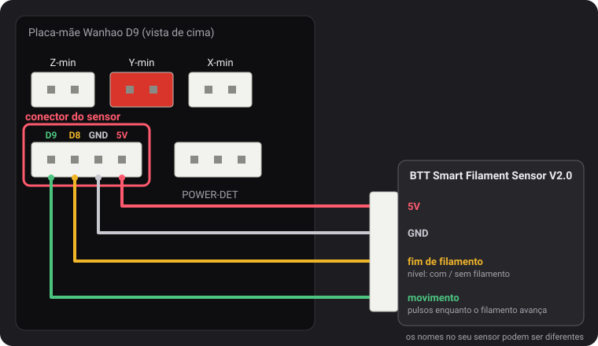
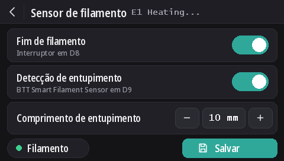

Sensores de filamento
Desde a v2.0.5, estes firmwares leem dois tipos de sensor: o interruptor de fim de filamento da Wanhao e o BTT Smart Filament Sensor V2.0, que também percebe quando o filamento para de andar (carretel embaraçado, entupimento, filamento mordido pela engrenagem). A detecção de fim de filamento vem ativada por padrão em todos os modelos, e a detecção de entupimento vem desativada.
O conector do sensor

O conector de 4 pinos à esquerda do POWER-DET, abaixo dos conectores dos fins de curso, tem D9, D8, GND e 5V, nessa ordem. Os nomes dos pinos vêm de um diagrama de ligação da Wanhao que o dustovich encontrou e compartilhou no Discord; no verso da placa, os mesmos quatro pinos aparecem como CTRL, BTN, GND e VCC.
- D8 é a entrada de fim de filamento que o próprio firmware da Wanhao lê.
- D9 não é usado pelo firmware da Wanhao: estas versões leem nele o sinal de movimento do sensor BTT.
Na tela
Com o DGUS Reloaded 2.0 na tela (firmware v2.0.9 ou mais recente): Configurações → Filamento → Sensor de filamento.
- Fim de filamento ativa ou desativa toda a detecção, como
M412 S1/M412 S0. - Detecção de entupimento ativa a detecção de entupimento com o comprimento logo abaixo, ou a desativa (
L0). - Comprimento de entupimento: − e + mudam o valor de 1 em 1 mm; toque no número para digitá-lo.
- O ponto Filamento fica verde enquanto o interruptor detecta filamento, e vermelho quando não detecta.
- As mudanças valem na hora. Salvar grava as mudanças, como
M500. A seta de voltar sai sem salvar: as configurações salvas voltam na próxima inicialização.

Os comandos M412
Tudo é configurado pelo USB em um terminal serial (Pronterface, o terminal do seu fatiador ou do OctoPrint,
250000 baud). Os parâmetros podem ser combinados em um só comando, por exemplo M412 S1 L10.
| Comando | O que faz |
|---|---|
M412 | Mostra o estado, por exemplo Filament runout ON ; Distance 5.00mm ; Motion distance 0.00mm. |
M412 S1 | Ativa a detecção: o interruptor de fim de filamento, e também a detecção de entupimento se o comprimento de entupimento não for 0. |
M412 S0 | Desativa toda a detecção, interruptor e entupimento. |
M412 D5 | Quando o interruptor deixa de detectar filamento, continua imprimindo 5 mm antes de pausar, para aproveitar o filamento que sobra entre o sensor e o bico. Padrão: 5 mm. |
M412 L10 | Ativa a detecção de entupimento (só com o sensor BTT): pausa quando 10 mm de filamento passam pela extrusora sem que a roda do sensor se mova. |
M412 L0 | Desativa a detecção de entupimento e deixa o interruptor de fim de filamento como está. É o padrão. |
M500 | Salva as configurações. Sem ele, a mudança se perde quando a impressora é desligada. |
M119 | A linha filament mostra TRIGGERED com filamento carregado e open sem filamento. |
M412 L0, e o L usado sozinho, vêm da nossa modificação no Marlin
(MarlinFirmware/Marlin#28585), incluída nestes firmwares. Em um Marlin sem ela, o L
sozinho é ignorado e o L0 pausa a impressão na hora, como se fosse um entupimento.
O interruptor de fim de filamento da Wanhao
Ele informa ao firmware se há filamento. Quando o filamento acaba, a impressão pausa depois de mais 5 mm de filamento e a tela inicia uma troca de filamento.
Ele vem ativado por padrão em todos os modelos, desde a v2.0.8. Sem nada ligado no D8, o resistor de pull-up da placa mantém o pino em 5 V, o que é lido como “filamento presente”: a detecção então nunca dispara, por isso ela pode ficar ativada com ou sem sensor instalado. Ligue um interruptor de fim de filamento no D8 e ele funciona na hora.
- A detecção de entupimento continua desativada (
L0): este interruptor não consegue ver o filamento andar. - Para desativar o interruptor:
M412 S0e depoisM500. - As configurações salvas por uma versão anterior mantêm o estado ativado ou desativado. Para ativar:
M412 S1e depoisM500, ou volte aos valores padrão (M502e depoisM500, o que também apaga o offset Z da sonda e a malha).
BTT Smart Filament Sensor V2.0
Este sensor tem duas saídas, e o firmware lê cada uma de um jeito:
- O interruptor de fim de filamento (no D8) dá um nível: 5 V enquanto há filamento, 0 V quando ele acaba.
- A saída de movimento (no D9) vem de uma rodinha que o filamento faz girar ao passar. A cada poucos milímetros de filamento, a saída alterna entre 0 V e 5 V. O firmware só observa essas mudanças: se a extrusora empurrar o comprimento de entupimento sem nenhuma mudança, o filamento não está acompanhando (carretel embaraçado, entupimento, filamento mordido pela engrenagem), e a impressão pausa. O interruptor de fim de filamento não consegue ver isso: durante um entupimento, o filamento continua lá.
Ligação
5V no 5V, GND no GND, o sinal do interruptor de fim de filamento no D8 e o sinal de movimento no D9. Os nomes impressos no cabo do sensor podem ser diferentes.
Ativar
M412 S1 L10
M500Se as impressões pausarem sem motivo, aumente o comprimento de entupimento: M412 L15 e depois M500. Para manter só
o interruptor de fim de filamento: M412 L0 e depois M500.
Conferir
M412: Filament runout ON ; Distance 5.00mm ; Motion distance 10.00mm.M119com filamento carregado: filament: TRIGGERED. Se essa linha mudar quando você empurra o filamento com a mão, e não quando você o coloca ou tira, os dois fios de sinal estão trocados: inverta D8 e D9.
L0 nunca
dispara), mas ainda não com o próprio sensor BTT. Se o interruptor for lido ao contrário (open com filamento
carregado), avise a gente no Discord.Atualizando a partir da v2.0.5 ou da v2.0.6
Essas versões não tinham como desativar a detecção de entupimento, então usavam um comprimento de entupimento longo demais para ser alcançado: 100 m na
v2.0.5 (na verdade curto demais: cerca de um terço de um carretel de 1 kg, depois do qual uma impressora deixada ligada podia pausar sem motivo) e
10 km na v2.0.6. Quando a impressora inicia, a v2.0.7 carrega esses dois valores como L0. Um comprimento real que você configurou
para um sensor BTT, como L10, é mantido. A partir da v2.0.4 ou anterior, a distância de fim de filamento de 5 mm é carregada
no lugar do 0 que essas versões salvavam.